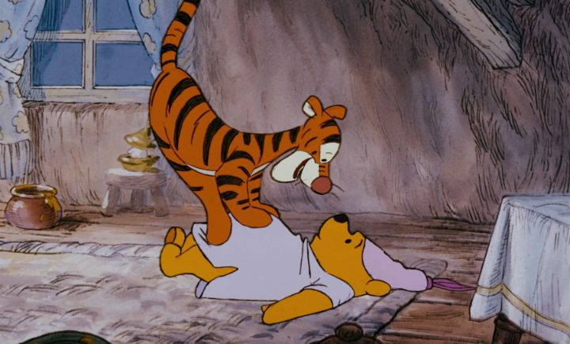

Reviewing "The Many Adventures of Winnie the Pooh" doesn't seem fair. In it's way, the movie is perfect and un-reviewable. After all, in many fan polls, Pooh is often listed as the top fan favorite Disney character, even beating out mascots like Mickey Mouse and Donald Duck. It's hard to pin down exactly what resulted in the character's success. Perhaps it was timing (in the 1970's, when Disney was established and more global, Pooh was new and Mickey was old). Perhaps it was how innocent the characters were, appropriate to market to children as little as one-year-old. Or perhaps it was the endless sequels and spin-offs, from television to home-video to theatrical films, plus books and toys and other merchandise, that kept the character in everyone's mind. I don't think any other Disney character has had so much material produced.Which is amazing since, like most other Disney movies, Winnie the Pooh was based off an existing book, and Disney's success led to most fans thinking of the cartoon before the original source. The classic childrens books were written by A.A. Milne, for his real life son Christopher, after seeing a Canadian bear named Winnie (perhaps named after Winnipeg) in the zoo. But it's only in Disney's version that Pooh gets his iconic red shirt. A few other characters are unique to the cartoons, and don't appear in the books. The general premise is that a human boy named Christopher Robin has a bunch of stuffed animal toys, and plays with them in a forest near his backyard. The toys all walk and talk as if they were alive, presumably all just a part of the boy's imagination, but that's real enough for us. They have simple adventures about getting along, learning things, and finding honey for Pooh-bear's endless appetite. "The Many Adventures" is technically an anthology of three short films featuring Pooh and his friends, with additional transitional dialogue and a short epilogue of Christopher and Pooh talking about friendship at the end. The first short introduces us to the characters, namely Pooh, and his misadventure trying to get honey from a behive, and ending up stuck in his friend Rabbit's doorway. The second short takes place during a particularly windy day, where a flood eventually occurs (and this also introduces us to Tigger for the first time). The third short is about Rabbit trying to get Tigger to stop bouncing on everybody once and for all, and maybe realizing that bouncing isn't so bad after all. Each of the shorts are designed such that they could be repackaged individually for television or home video release. In fact, the individual releases on VHS were the first time I saw the shorts as a child, and when we got a copy of the full movie, I was confused as to why 90% of the content was identical, and fascinated at the differences in between. It's lesser known that there's actually a fourth short, titled "Winnie the Pooh and a Day for Eeyore," that was produced a few years after the movie, but was an indepedent VHS release in the same series line. It's style is identical, and it could have fit perfectly with the original feature-length film... a shame it wasn't, since this was my favorite. It's typically included now as a bonus feature on DVD.  To frame the stories, the movie opens with a live-action shot of a storybook, like most of the Disney movies did. But "Winnie the Pooh" goes all in on this, showing the book in a child's bedroom full of toys, and providing a narrator that breaks the fourth wall with the viewer and the characters. In fact, the book itself is an active player in the story: we're reminded about the story moving forward by characters jumping to the next page, and even rotating the book or its text to modify the plot. It's particularly clever and engaging, and elevates the otherwise simple stories. There's a continuous charm to the world, including many mispelled signs and words in the backgrounds, the way a child might attempt to spell or read something after hearing it.Despite being relatively simple and intended for very young viewers, the whimsy of the stories would probably entertain the young at heart. Of course you know Winnie the Pooh, the yellow bear "with very little brain" that thinks only about honey, or friends, or honey again. There's his best friend, the timid Piglet (who's character design didn't seem finalized until the last minute, based on the opening credits). There's the uptight and worry-wart Rabbit, the endless fountain of useless knowledge and stories Owl, and Kanga and Roo. And Tigger too, the bouncy striped creature that can't make up his mind on what a Tigger is (other than that HE is the only one). There's also Gopher, whom I fogot appears in this film (I thought he was a newer character from the TV show). Christopher is usually the wise one, lending a hand when any of the characters are hopelessly stuck on something. Part of the charm is that each character is simple, and everyone can have a different favorite. There's a lot of delightful songs in the movie, each one among the more iconic songs from Disney in the prior two decades. Of course, that includes the theme song ("Win-nie-the-Pooh, Win-nie-the-Pooh..."), Tigger's theme, and a song about Heffalumps and Woozles (accompanied by a surreal nightmare dream by Pooh that was more creative than I remembered, and surely inspired by the Pink Elephants in "Dumbo"). The voice acting is truly iconic for all the characters, especially Sterling Holloway as Pooh (an actor that was many Disney characters, but probably best remembered as Pooh), and Paul Winchell as Tigger. in more modern works, Jim Cummings does an incredible job for both of these roles. And Disney's animation style, using the Xerox-method, looks more appropriate than ever for "The Many Adventures of Winnie the Pooh." Their pencil outlines look like drawings come-to-life. It's hard to imagine them rendered any other way. In fact, despite the movie being deceptively simple, and perhaps low-effort, it's darn near perfect, in which I mean I wouldn't change a thing about it.
- "Ani" More reviews can be found at : https://2danicritic.github.io/ Previous review: review_The_Lord_of_the_Rings Next review: review_The_Melancholy_of_Haruhi-Chan_Suzumiya